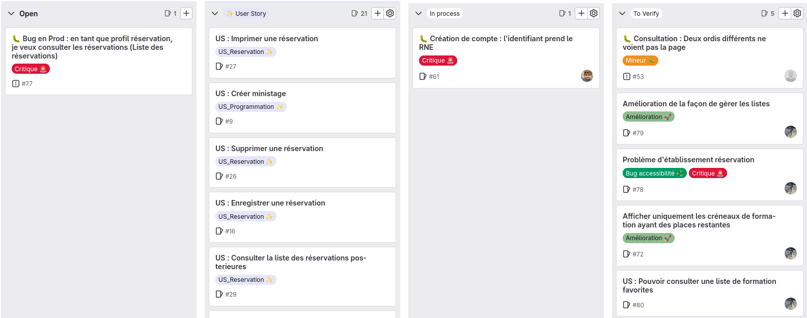
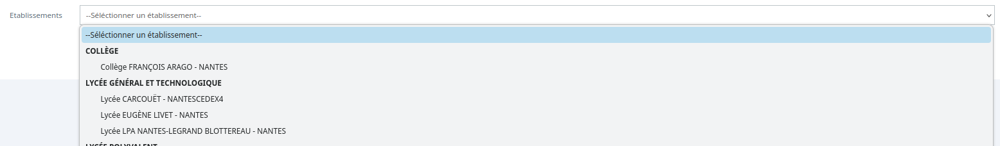

Ministages44
Outils utilisés:
Framagit
PhpStorm
DBeaver
Lampp
PhpStorm
DBeaver
Lampp
Technologies utilisées:
PHP
MySQL
Git
Javascript
MySQL
Git
Javascript
Contexte:
Projet réalisé en cours et durant mon stage
de deuxième année.
Le projet vise à réaliser des opérations de maintenances sur le site Ministages44.
Ministages44 est une application dont le but est pour des établissements de créer ou réserver des ministages pour qu'un élève de collège ou de lycée découvre une formation.
Le projet vise à réaliser des opérations de maintenances sur le site Ministages44.
Ministages44 est une application dont le but est pour des établissements de créer ou réserver des ministages pour qu'un élève de collège ou de lycée découvre une formation.
Déroulé du projet:
Projet réalisé en groupe avec l'outil git en utilisant un système de tickets, pour répartir les tâches:
Chaque ticket correspond à une demande ou un souci à résoudre.
Exemples de soucis résolus:
- -Envois de rappels et signalement d'absences non fonctionnels
- -Absence des établissements de type "Collège" dans la liste des établissements réservants
- -Erreur lors de l'enregistrement d'une réservation pour un étudiant n'appartenant pas à un établissement connu par le site
Par exemple, pour l'erreur concernant les élèves appartenant à un établissement non connu, le problème venait d'une liste déroulante dont la donnée était sensée ne pas être conservée en cochant "établissement non connu" Que l'on conservait en fait:

Pour résoudre ce problème je me suis assurée d'abord côté front que l'on ne puisse pas sélectionner le texte en haut de la liste en utilisant l'attribut "disabled selected"" sur ce premier élément, puis j'ai fait en sorte que la valeur retournée soit bien celle attendu pour un établissement non enregistré.

Exemples de demandes d'améliorations à apporter à l'application:
- Implémentation d'une liste utilisant du Javascript pour pouvoir écrire une partie d'un mot afin de filtrer les résultats
- Remplacement de l'affichage des crénaux en "complet" par une suppression de la liste
- Construction des listes de façon dynamique
- Ajout d'une fonctionnalité permettant l'ajout d'une formation à une liste de favoris
Par exemple, pour l'ajout de formation favorites, les fichiers à modifier étaient ceux en lien avec le profil de l'utilisateur pour la gestion de cette liste de favoris, et ceux comportant des liste proposant de rechercher un ministage via une formation pour ramener les formations favorites de l'utilisateur vers le haut de la liste. Cela a aussi demandé l'ajout en base de donnée d'une table reliant les utilisateurs aux formations, qui stocke pour chaque formation ajoutée aux favoris l'id de l'utilisateur et celui de la formation.
Documentation technique de cette nouvelle fonctionnalité
Une autre amélioration réalisée a donc été la modification de l'affichage des listes déroulantes pour permettre une recherche plus facile.
Pour cette fonctionnalité, j'ai du me documenter sur le langage Javascript que je ne maîtrise pas, et faire des tests à côté, voici la documentation utilisée, et un exemple de liste comme celle que j'ai pu réaliser pour le projet.
Documentation Select2
Exemple d'une implementation de Select2:
L'ajout de ces fonctionnalités vise à rendre l'utilisation du site plus agréable et fluide pour les utilisateurs, en facilitant la recherche d'une formation dans la liste qui est assez longue.
Dépploiement des modifications effectuées
Pour rendre les modifications apportées à l'application, il a fallu les dépployer sur le serveur qui héberge le site.On commence donc par créer une sauvegarde des fichiers présents sur le serveur qu'on renome afin de pouvoir annuler la modification apportée en cas de problème.
On peut ensuite copier les fichiers contenant les variables d'environnement et les ajouter à la version qu'on a en local.
Ensuite, on copie les fichiers qu'on a en local et on les dépose sur le serveur.